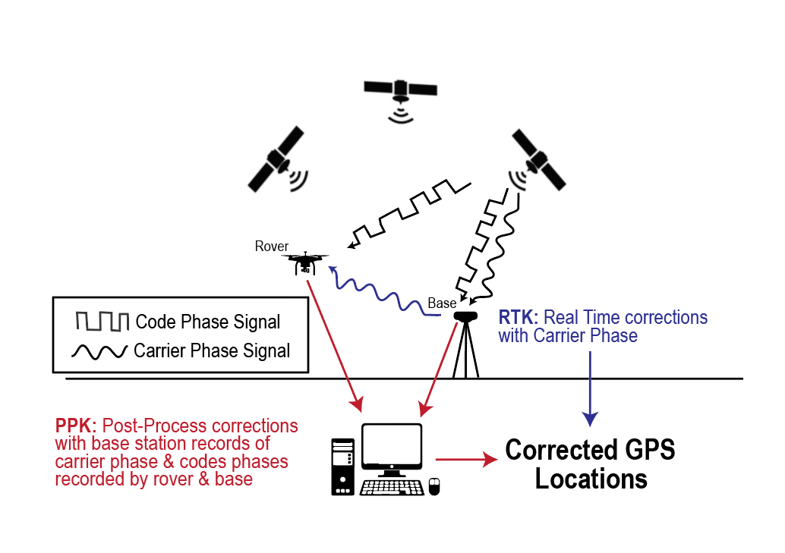
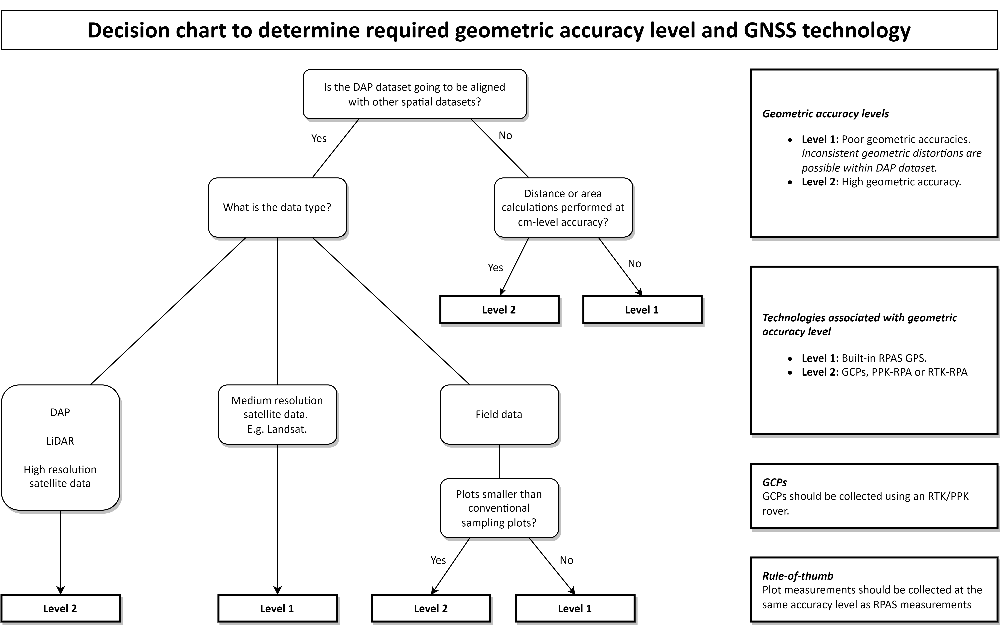

Chapter 3 Geometric Accuracy
During data acquisition, time and positional information is imprinted on each image collected by the RPAS. The most basic RPA (for example, the Phantom 4 Pro) use global positioning system (GPS) receivers to achieve this. GPS satellites are owned and operated by the United States of America and constitute one of several global navigation satellite systems (GNSS). More sophisticated RPA (for example, the Phantom 4 RTK) are equipped with GNSS receivers and are able to communicate with GPS satellites in addition to satellites from other GNSS constellations (for example, the European Union Galileo constellation). In this way, GNSS receivers can provide more accurate and reliable positional data by utilizing additional satellites. The positional information determined by RPA GPS or GNSS receivers is later used to locate each collected image in space during photogrammetric processing. As such, the quality of image geolocation affects the quality of photogrammetric reconstruction.
Geolocation errors arise from both satellite-associated errors as well as receiver-associated errors. Regardless of the type of receiver, satellite-associated errors are likely to be encountered. Satellite-associated geolocation errors are rectified using either real time kinematic (RTK) or post processing kinematic (PPK) correction algorithms. RTK and PPK systems rely on a combination of a rover (for example, an RPA or handheld GPS or GNSS unit), and a GNSS base station, where the base station is established over a known fixed position and records data to differentially correct for satellite-associated errors. RTK and PPK systems allow for centimeter-level accuracy, which is necessary in surveying most applications, whereas RPAS using solely built-in GPS or GNSS receivers can expect metre-level accuracy.
In RTK and PPK systems, a base station placed over a known location continually records the difference between that known location and its location as estimated by overhead satellites. This difference creates a correction factor that is then applied to positions recorded by a roving GPS or GNSS unit, which can be an RPA or a hand-held unit. In RTK systems, base stations apply correction factors on the fly using carrier phase data (a measure of the error in position measured between bases actual and known location). In PPK systems, both the rover and the base station record GNSS data and are corroborated in later processing to calculate the absolute position of the rover. RTK requires constant connection between the base station and the rover, while PPK processing data is recorded simultaneously but there requires no real-time data transfer between the rover and the unit. An overview of these processes is provided in (Figure 1).
In RPAS workflows, geolocation accuracy may be improved through use of new technology which integrates PPK and RTK positions directly with the RPAS, or traditional ground control point (GCP) placement. We first outline the process of using ground control points before revisiting PPK and RTK workflows.
3.1 Ground Control Points (GCP)
Traditionally, RPAS surveying at centimetre-level accuracy has relied on the integration of ground control points (GCP), which are used to apply geometric corrections in photogrammetric models. GCP are large (ranging from approximately 30 cm2 to 1 m2 in size), marked targets distributed over the site for which RPAS imagery is collected. Target locations are recorded with a hand-held GPS or GNSS device and are later identified by the user in the imagery during photogrammetric processing. In the case of data collection with a non-RTK RPAS, PPK or RTK processing can be incorporated with GCP location measurements by using the hand-held GPS or GNSS device as a rover. The geometric accuracy of the final model, of which the point cloud and orthomosaic are major products, is highly dependent on the distribution and density of the GCP. Typically, tree-based studies (especially studies focussing on small tree crowns) require models of much higher geometric accuracy than area-based studies. Optimal positioning (i.e. distribution and density) of GCP is dependent on 1) elevation changes, 2) the size of a site, and 3) the camera’s field-of-view. Various guidelines on how to capture GCP are available online, such as DroneDeploy (DroneDeploy2021Ground?). Note that the integration of GCP adds significant workload to both field data collection, as well as photogrammetric processing. Placing of GCP targets may also cause a degree of trampling and as such, may be considered intrusive.
RTK and PPK allow the surveyor to largely or completely phase out GCP points, and instead use a base station which is connected directly to the RPAS. In this instance, the RPA is essentially replacing a traditional rover unit. Users can improve overall geolocation accuracy using a combination of RTK systems with PPK processing. The following sections discuss RTK processing and PPK processing using files generated from a traditional base station and a rover combination, or files generated from a base station and an RPA rover.
3.2 Real-Time Kinematic (RTK) Workflows
RTK positioning systems apply corrections in real time by calculating additional difference offset between the base station and the satellite communicated by the carrier phase of the satellite itself. Generally, RTK RPA like the DJIs Phantom 4 RTK, Matrice 200, or Matrice 300 come with their own base station unit and store a .rinex file for each flight. These files contain the GNSS positioning errors associated with the locations recorded for each photo. The corrections can be loaded directly into different photogrammetry processing softwares to incorporate the accurate and precise locations of the RPA in each photo. Note that connection between a rover and RTK base station can be lost, particularly in complex environments with limited line-of-sight. In such a case, geometric accuracy is likely to be reduced. Caution is advised when operating in such conditions. If a loss of connection seems likely, the use of GCP or PPK in addition to RTK is recommended if consistently high geometric accuracy is required.
3.3 Post-Processing Kinematic Workflows (PPK)
The PPK workflow includes an additional processing step to combine data from a base station and the RPA or rover. The base station is typically a third-party nearby base station from which data is gathered in post data acquisition or near real-time through a mobile network. The data includes recorded messages of the satellite’s carrier phase to calculate a difference metric that relates the precise location of the roving unit (or RPA) to the base station. PPK then corrects the positions recorded by the roving unit, after which the positional accuracy of the rover will be similar to the accuracy of the PPK base station. However, some error is likely to be introduced during the transformation of the rover’s positions and accuracy may diminish as a function of distance from the PPK base station. Typically, location data can only be processed using software distributed by the manufacturer of the rover. A good example of this are the Trimble units, which require post-processing with GPS Pathfinder Office (Trimble-Inc-2022GPS?). However, RTKLIB (Takasu2013RTKLIB?) is a well known free open source alternative to paid PPK software. Note that the distance away from the base station is very important in order to improve geometric accuracy following PPK. In some provinces like British Columbia a continuous network of base stations is operational, whereas this is problematic in large parts of Alberta. PPK position files can then be loaded into the photogrammetry processing software similar to the RTK processing steps above.
3.4 Determining Use-Case
PPK- and RTK-enabled GNSS systems are considerably more expensive than conventional GPS/GNSS options. As an example, the Phantom 4 RTK costs $CAD 11,600 while the non-RTK equivalent costs $CAD 2,200 (DJI2022DJI?). A user needs a subscription to be able to use PPK services, which (at the time of this writing) costs around $CAD 2,625 per year for Trimble CenterPoint RTX rovers (Trimble-Inc-2022CenterPoint?). To be able to justify the higher costs of PPK and RTK, a decision maker should have a good understanding of the desired use-cases for datasets.
The use-case determines the necessary geometric accuracy level, thus whether GCPPPK/RTK is required. A DAP dataset that is going to be used solely for applications such as tree identification and classification of vegetation types does not require high geometric accuracy, nor does a dataset that is going to be used in combination with large (~ 9 m radius) sample plots or sample plots easily identifiable in the imagery. For any other use case, data acquisition likely requires the use of GCPPPK/RTK. Note that not using GCP/PPK/RTK can lead to increases in horizontal and vertical error and error in geolocation will correspond to error in tree height measurements from photogrammetric products. When the DAP dataset is going to be used in combination with other datasets, it is important that the DAP dataset does not include any irregular random distortions (i.e. high local accuracy) and is positioned correctly (i.e. high global accuracy). Decision makers and end-users should refer to Figure 2 to assess whether the use of more accurate GNSS technology is required.
